3. 商业周期#
3.1. 概览#
在本讲座中，我们将从实证的角度分析商业周期。
商业周期是经济活动随时间波动的现象。
这包括扩张期（也称为繁荣期）和收缩期（也称为衰退期）。
除了Anaconda中包含的包之外，本讲还需要以下的包：
!pip install wbgapi
!pip install pandas-datareader
接下来我们导入本讲所需的Python包。
import matplotlib.pyplot as plt
import pandas as pd
import datetime
import wbgapi as wb
import pandas_datareader.data as web
import matplotlib as mpl
FONTPATH = "fonts/SourceHanSerifSC-SemiBold.otf"
mpl.font_manager.fontManager.addfont(FONTPATH)
plt.rcParams['font.family'] = ['Source Han Serif SC']
# 英文国家名 → 中文名映射（用于图例标签）
name_cn = pd.read_csv('../lectures/datasets/country_code_cn.csv').set_index('name')
下面几行代码是用来设置图形参数的。
我们将所有时间序列数据都获取到最新的可用数据。
# 我们下面获取的数据的截止日期。
# 若要固定数据以便构建可复现的版本，请将其替换为
# 固定日期，例如 datetime.datetime(2024, 12, 31)。
end_date = datetime.datetime.now()
3.2. 数据获取#
我们将使用世界银行的数据API wbgapi 和 pandas_datareader 来检索数据。
我们可以使用 wb.series.info 并使用参数 q 来查询来自世界银行的可用数据。
例如，我们可以试着检索 GDP 增长数据 ID 以查询 GDP 增长数据。
wb.series.info(q='GDP growth')
| id | value |
|---|---|
| NY.GDP.MKTP.KD.ZG | GDP growth (annual %) |
| 1 elements |
现在我们使用这个系列 ID 来获取数据。
gdp_growth = wb.data.DataFrame('NY.GDP.MKTP.KD.ZG',
['USA', 'ARG', 'GBR', 'GRC', 'JPN'],
labels=True)
gdp_growth
| Country | YR1960 | YR1961 | YR1962 | YR1963 | YR1964 | YR1965 | YR1966 | YR1967 | YR1968 | ... | YR2016 | YR2017 | YR2018 | YR2019 | YR2020 | YR2021 | YR2022 | YR2023 | YR2024 | YR2025 | |
|---|---|---|---|---|---|---|---|---|---|---|---|---|---|---|---|---|---|---|---|---|---|
| economy | |||||||||||||||||||||
| JPN | Japan | NaN | 12.043536 | 8.908973 | 8.473642 | 11.676708 | 5.819708 | 10.638562 | 11.082142 | 12.882468 | ... | 0.704986 | 1.623451 | 0.834144 | -0.308497 | -4.283279 | 3.564195 | 1.331648 | 0.720785 | -0.240084 | 1.193113 |
| GRC | Greece | NaN | 13.203839 | 0.364812 | 11.844867 | 9.409677 | 10.768011 | 6.494501 | 5.669486 | 7.203718 | ... | -0.031795 | 1.473125 | 2.064672 | 2.277181 | -9.196231 | 8.654498 | 5.521986 | 2.135911 | 2.086574 | 2.073069 |
| GBR | United Kingdom | NaN | 2.701314 | 1.098696 | 4.859545 | 5.594811 | 2.130333 | 1.567450 | 2.775738 | 5.472693 | ... | 2.206520 | 3.023222 | 1.551331 | 1.256299 | -10.047897 | 8.543112 | 5.149704 | 0.271650 | 1.080277 | 1.388442 |
| ARG | Argentina | NaN | 5.427843 | -0.852022 | -5.308197 | 10.130298 | 10.569433 | -0.659726 | 3.191997 | 4.822501 | ... | -2.080328 | 2.818503 | -2.617396 | -2.000861 | -9.900485 | 10.441812 | 6.020745 | -1.855788 | -1.342931 | 4.367333 |
| USA | United States | NaN | 2.300000 | 6.100000 | 4.400000 | 5.800000 | 6.400000 | 6.500000 | 2.500000 | 4.800000 | ... | 1.819451 | 2.457622 | 2.966505 | 2.583825 | -2.081376 | 6.152022 | 2.524214 | 2.934363 | 2.793187 | 2.161382 |
5 rows × 67 columns
我们可以查看系列的元数据，了解有关该系列的更多信息（点击展开）。
wb.series.metadata.get('NY.GDP.MKTP.KD.ZG')
3.3. GDP 增长率#
首先，让我们来看看GDP增长率。
我们先获取世界银行的数据并进行数据清洗。
# 使用之前获取的系列 ID
gdp_growth = wb.data.DataFrame('NY.GDP.MKTP.KD.ZG',
['USA', 'ARG', 'GBR', 'GRC', 'JPN'],
labels=True)
gdp_growth = gdp_growth.set_index('Country')
gdp_growth.columns = gdp_growth.columns.str.replace('YR', '').astype(int)
我们把数据打印出来看一看
gdp_growth
| 1960 | 1961 | 1962 | 1963 | 1964 | 1965 | 1966 | 1967 | 1968 | 1969 | ... | 2016 | 2017 | 2018 | 2019 | 2020 | 2021 | 2022 | 2023 | 2024 | 2025 | |
|---|---|---|---|---|---|---|---|---|---|---|---|---|---|---|---|---|---|---|---|---|---|
| Country | |||||||||||||||||||||
| Japan | NaN | 12.043536 | 8.908973 | 8.473642 | 11.676708 | 5.819708 | 10.638562 | 11.082142 | 12.882468 | 12.477895 | ... | 0.704986 | 1.623451 | 0.834144 | -0.308497 | -4.283279 | 3.564195 | 1.331648 | 0.720785 | -0.240084 | 1.193113 |
| Greece | NaN | 13.203839 | 0.364812 | 11.844867 | 9.409677 | 10.768011 | 6.494501 | 5.669486 | 7.203718 | 11.563668 | ... | -0.031795 | 1.473125 | 2.064672 | 2.277181 | -9.196231 | 8.654498 | 5.521986 | 2.135911 | 2.086574 | 2.073069 |
| United Kingdom | NaN | 2.701314 | 1.098696 | 4.859545 | 5.594811 | 2.130333 | 1.567450 | 2.775738 | 5.472693 | 1.939138 | ... | 2.206520 | 3.023222 | 1.551331 | 1.256299 | -10.047897 | 8.543112 | 5.149704 | 0.271650 | 1.080277 | 1.388442 |
| Argentina | NaN | 5.427843 | -0.852022 | -5.308197 | 10.130298 | 10.569433 | -0.659726 | 3.191997 | 4.822501 | 9.679526 | ... | -2.080328 | 2.818503 | -2.617396 | -2.000861 | -9.900485 | 10.441812 | 6.020745 | -1.855788 | -1.342931 | 4.367333 |
| United States | NaN | 2.300000 | 6.100000 | 4.400000 | 5.800000 | 6.400000 | 6.500000 | 2.500000 | 4.800000 | 3.100000 | ... | 1.819451 | 2.457622 | 2.966505 | 2.583825 | -2.081376 | 6.152022 | 2.524214 | 2.934363 | 2.793187 | 2.161382 |
5 rows × 66 columns
接下来我们写一个函数来绘制各个国家的时间序列图并突出显示经济衰退的时期。
让我们先从美国开始
fig, ax = plt.subplots()
country = 'United States'
ylabel = 'GDP 增长率 (%)'
plot_series(gdp_growth, country,
ylabel, 0.1, ax,
g_params, b_params, t_params)
plt.show()
findfont: Failed to find font weight normal, now using 600.
findfont: Failed to find font weight normal, now using 600.
{kind=link}
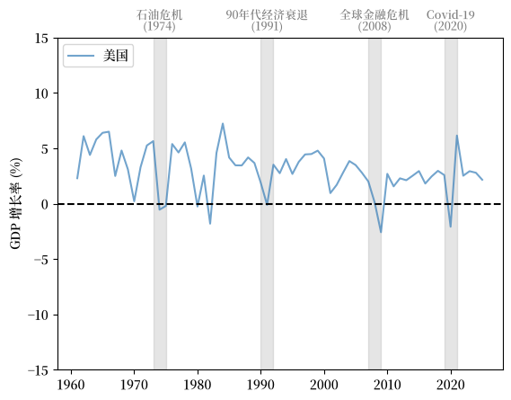
Fig. 3.1 美国 (GDP 增长率 %)#
从图中我们可以看到，GDP 平均增长率呈现正值，并且随着时间的推移呈现轻微下降趋势。
我们也看到GDP增长率的波动随时间变化，其中一些波动幅度很大。
让我们再多看一些国家的趋势并与美国比较。
英国 (UK) 的模式与美国类似，增长率缓慢下降，波动显著。
我们注意到增长率在 Covid-19 大流行期间的大幅下跌。
fig, ax = plt.subplots()
country = 'United Kingdom'
plot_series(gdp_growth, country,
ylabel, 0.1, ax,
g_params, b_params, t_params)
plt.show()
{kind=link}
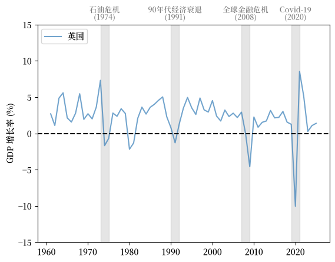
Fig. 3.2 英国 (GDP 增长率 %)#
接下来我们看看日本，它在1960年代和1970年代经历了快速增长，并在过去二十年里增长放缓。
增长率的大幅下降与 1970 年代的石油危机、全球金融危机（GFC）和 Covid-19 大流行同时发生。
fig, ax = plt.subplots()
country = 'Japan'
plot_series(gdp_growth, country,
ylabel, 0.1, ax,
g_params, b_params, t_params)
plt.show()
{kind=link}
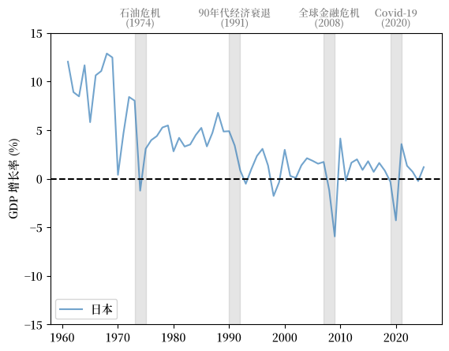
Fig. 3.3 日本 (GDP 增长率 %)#
现在让我们研究希腊。
fig, ax = plt.subplots()
country = 'Greece'
plot_series(gdp_growth, country,
ylabel, 0.1, ax,
g_params, b_params, t_params)
plt.show()
{kind=link}
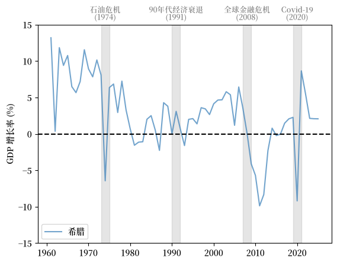
Fig. 3.4 希腊 (GDP 增长率 %)#
希腊在2010-2011年左右经历了GDP增长率的大幅下降，这正是希腊债务危机最严重的时期。
接下来我们来看看阿根廷。
fig, ax = plt.subplots()
country = 'Argentina'
plot_series(gdp_growth, country,
ylabel, 0.1, ax,
g_params, b_params, t_params)
plt.show()
{kind=link}
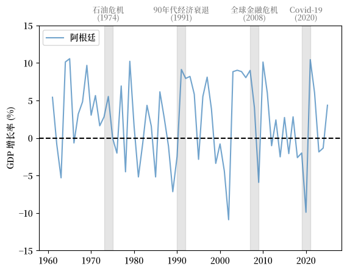
Fig. 3.5 阿根廷 (GDP 增长率 %)#
注意阿根廷经历的波动周期远比上述国家剧烈。
与此同时，阿根廷的增长率在20世纪70年代和90年代两次发达经济体衰退期间并未下降。
3.4. 失业#
失业率是衡量商业周期的另一个重要指标。
我们使用 FRED 提供的 1929-1942 年到 1948年至今 的失业率数据，以及人口普查局估算的1942-1948年间的失业率数据来研究失业问题。
接下来我们绘制美国从1929年到现在的失业率，以及由美国国家经济研究局（NBER）定义的经济衰退期。
{kind=link}
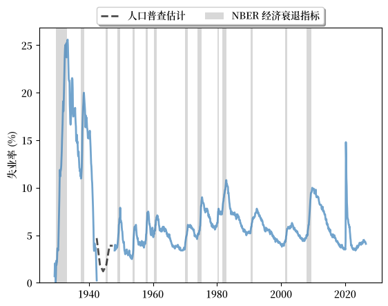
Fig. 3.6 长期失业率, 美国 (%)#
图表显示：
劳动力市场的扩张和收缩与经济衰退高度相关。
周期一般是不对称的：失业率的急剧上升后面通常跟随着缓慢的复苏。
它还向我们展示了美国在2020年疫情冲击后复苏期间劳动力市场状况的独特性。
失业率在2020年急剧飙升，随后又以前所未有的速度回落。
3.5. 同步化#
在我们的之前的讨论中，我们发现发达经济体的衰退期相对同步。
同时，这种同步现象直到21世纪才在阿根廷出现。
让我们进一步研究这种趋势。
通过轻微的修改，我们可以使用我们之前的函数来绘制包括多个国家的图表。
在此，我们对发达经济体和发展中经济体的GDP增长率进行比较。
我们将英国、美国、德国和日本作为发达经济体的例子。
{kind=link}
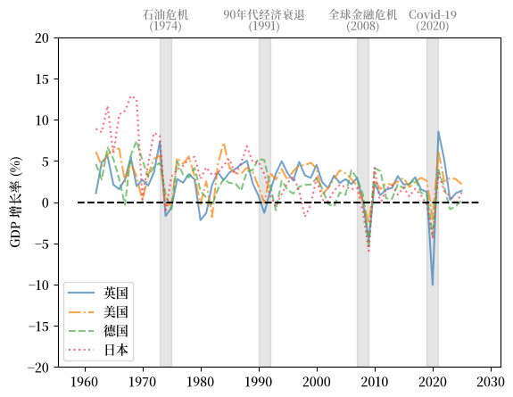
Fig. 3.7 发达经济体（GDP增长率 %）#
我们选择巴西、中国、阿根廷和墨西哥作为发展中经济体的代表。
{kind=link}
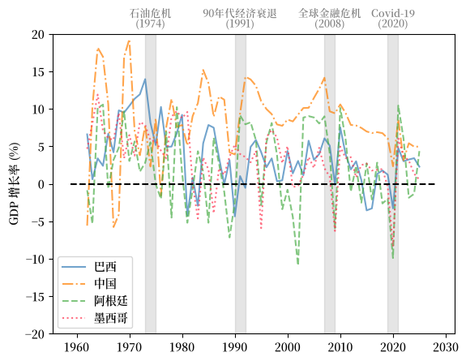
Fig. 3.8 发展中经济体 (GDP 增长率 %)#
上述GDP增长率的比较表明，21世纪的经济衰退中商业周期正变得更加同步。
然而，新兴和不发达经济体在整个经济周期中通常经历更加剧烈的变化。
尽管GDP增长实现了同步，但在衰退期间各国的经历常常有所不同。
我们使用失业率和劳动力市场状况的复苏作为另一个例子。
这里我们比较了美国、英国、日本和法国的失业率。
{kind=link}
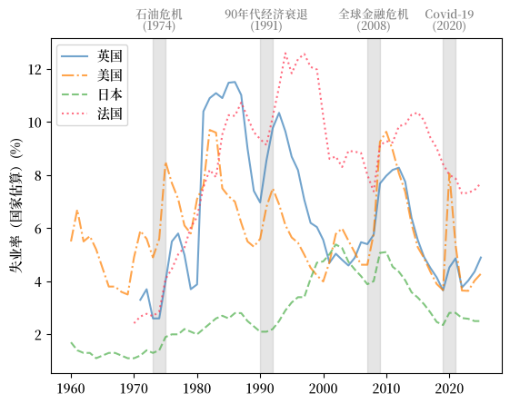
Fig. 3.9 发达经济体 (失业率 %)#
我们看到，工会力量强大的法国在受到负面冲击后，劳动力市场的复苏通常较为缓慢，这是因为工会的影响力往往导致严格的就业保护法、高昂的解雇成本和僵化的工资结构。虽然这些措施保护了现有工人的利益，但它们降低了企业根据经济状况变化调整劳动力成本和招聘的灵活性，从而在经济复苏期间导致劳动力市场的适应能力较低。
我们还注意到，日本的失业率一直非常低且稳定。
3.6. 领先指标和相关因素#
研究领先指标和相关因素有助于决策者了解商业周期的原因和结果。
我们将从消费、生产和信贷水平三个角度来讨论潜在的领先指标和相关因素。
3.6.1. 消费#
消费取决于消费者对其收入的信心以及未来经济的整体表现。
密歇根大学发布的消费者信心指数是一个被广泛引用的消费者信心指标。
这里我们绘制了1978年至今美国密歇根大学消费者信心指数和年同比 核心居民消费价格指数（CPI）的变化。
{kind=link}
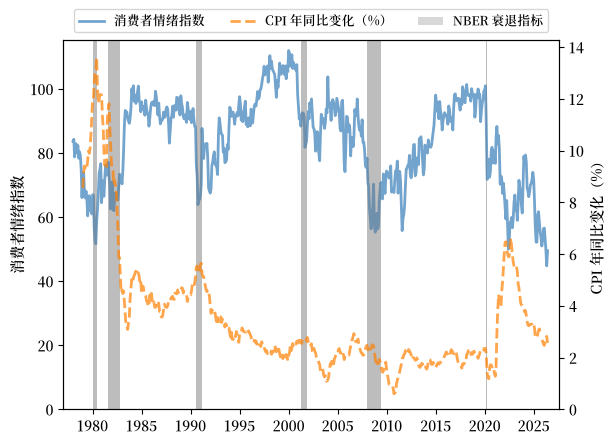
Fig. 3.10 消费者情绪指数和年同比 CPI 变化，美国#
我们看到：
消费者情绪在经济扩张期间常常保持高位，并在衰退前下降。
消费者情绪和CPI之间存在明显的负相关性。
当消费者商品的价格上涨时，消费者信心会下降。
这种趋势在滞胀期间更为明显。
3.6.2. 生产#
实际工业产出与经济衰退高度相关。
然而，它不是一个领先指标，因为产出收缩的高峰通常比消费者信心和通货膨胀的减弱要晚。
我们绘制了1919年至今美国实际工业产出的同比变化用于展示此趋势。
{kind=link}
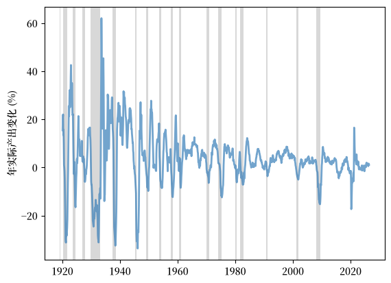
Fig. 3.11 年实际产出变化，美国（%）#
我们从图中可以观察到各次经济衰退的延迟收缩。
3.6.3. 信贷水平#
信贷收缩经常在经济衰退期间发生，因为出贷方变得更加谨慎，借款人也更加犹豫是否要承担更多的债务。
这是由于整体经济活动的减少和对未来前景的悲观预期。
一个例子是英国银行对私营部门的国内信贷。
下面的图表显示了1970年至今英国银行对私营部门的国内信贷占 GDP 的百分比。
{kind=link}
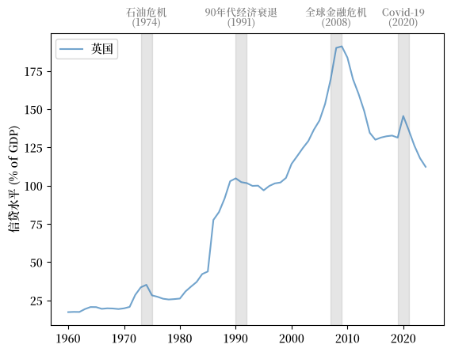
Fig. 3.12 银行对私营部门的国内信贷（% GDP）#
我们可以看到信贷在经济扩张期间上升，在衰退后停滞甚至收缩。